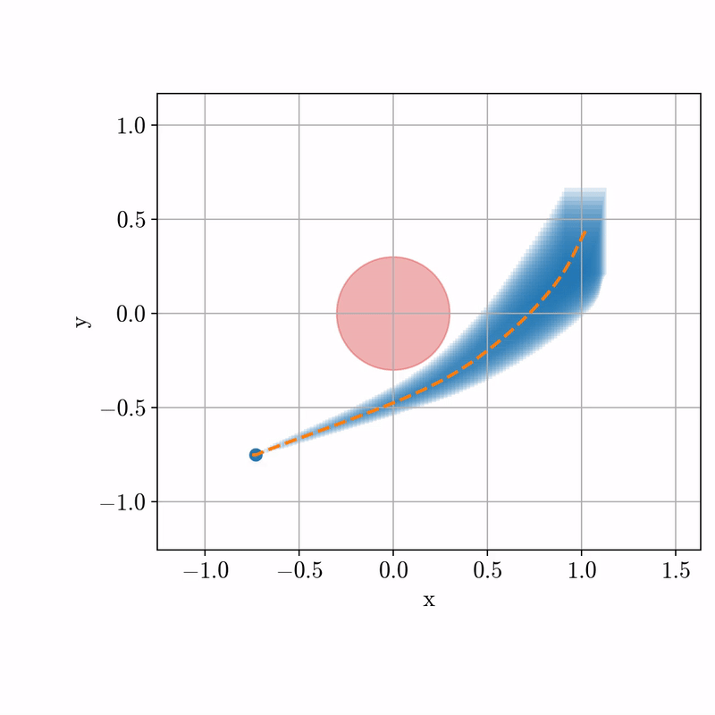
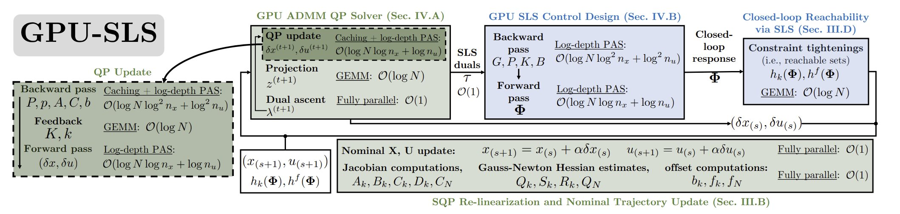
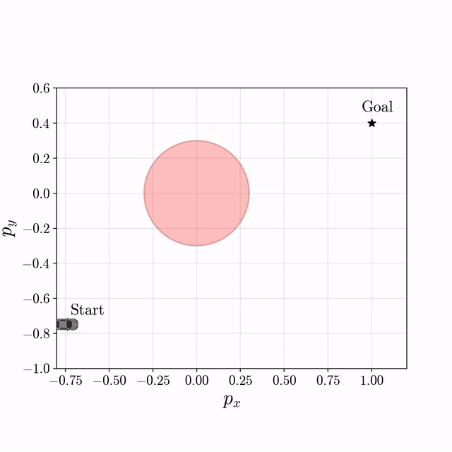
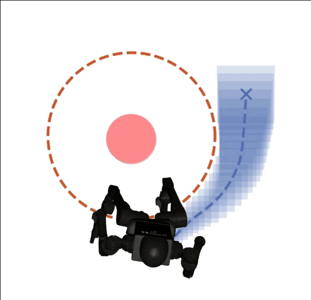

Non-Robust MPC
Under disturbances, nominal rollouts can drift into obstacles because the plan does not account for closed-loop uncertainty.
Fast nominal MPC can produce impressive trajectories, but disturbances can push the closed-loop system into unsafe states. GPU-SLS plans with robust reachable tubes so the controller has margin against uncertainty.
Under disturbances, nominal rollouts can drift into obstacles because the plan does not account for closed-loop uncertainty.

Reachable tubes tighten the constraints around the nominal plan, keeping all disturbed rollouts collision-free.
GPU-SLS combines a GPU-parallel constrained SQP/ADMM trajectory optimizer with system level synthesis. The optimizer finds a dynamically feasible nominal trajectory, while SLS computes a disturbance-feedback controller and reachable tubes that certify robust constraint satisfaction.

Parallel associative scans and cached factorizations make the trajectory, feedback, and reachability computations practical in a receding-horizon loop.
Against DeepReach, GPU-SLS explicitly synthesizes a robust feedback policy and reachable tube online, avoiding the unsafe rollouts produced by the learned safety certificate.

DeepReach fails to consistently certify safety under adversarial and random disturbance.

Our reachable-tube controller keeps the rollouts safe across the same obstacle-avoidance setting.

GPU-SLS synthesizes robust policies for long-range fields with many obstacle constraints, maintaining safety over extended horizons.
The same formulation scales from low-dimensional planning benchmarks to whole-body humanoid systems, where the policy must account for high-dimensional dynamics and uncertainty.

Disturbed humanoid rollouts remain inside the synthesized robust tubes.

Reachability-constrained MPC enables high-dimensional humanoid navigation around obstacles.
Finally, GPU-SLS runs on real quadruped hardware, producing robust whole-body control policies that navigate around obstacles in real time.

Robust whole-body control on quadruped hardware with online tube-aware policy synthesis.

Whole-body constrained MPC on a Unitree Go2 hardware platform.

The hardware rollout maintains positive distance to obstacles while tracking the robust plan.
@article{fang2026gpu_sls,
title={Safe Large-Scale Robust Nonlinear MPC in Milliseconds via Reachability-Constrained System Level Synthesis on the GPU},
author={Fang, Jeffrey and Chou, Glen},
institution={Georgia Institute of Technology},
year={2026}
}